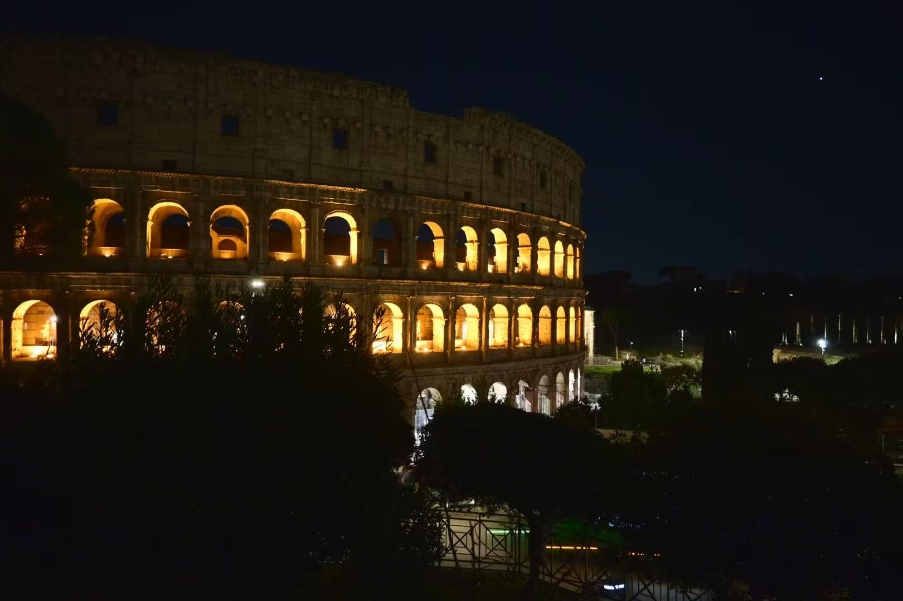
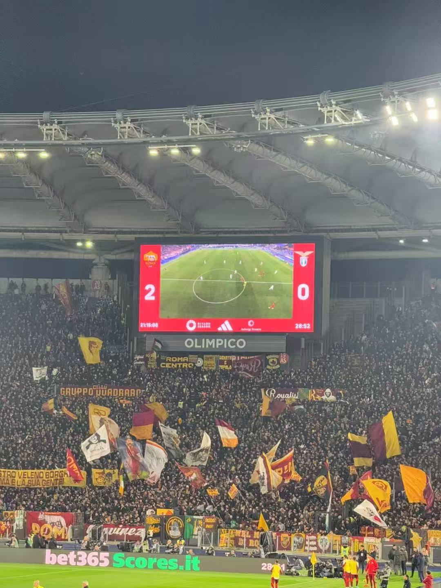

Rome
Day 1
After landing in Rome in the evening, I headed straight to the magnificent Colosseum. The nighttime glow made it even more majestic. I took photos from all angles, soaking in the historic atmosphere of ancient Rome under the stars.
Day 2
I started my day at the iconic Trevi Fountain, where I followed the tradition and tossed in a coin to ensure my return to Rome. Later that day, I experienced the thrill of a live AS Roma football match—a dream come true, full of passionate chants and an unforgettable atmosphere.
Day 3
The final day began with a visit to the heart of Catholicism: Vatican City. I explored the awe-inspiring Vatican Museums and was moved by the beauty of the Sistine Chapel. I also visited St. Peter’s Basilica, climbing to the dome for an incredible panoramic view of Rome.